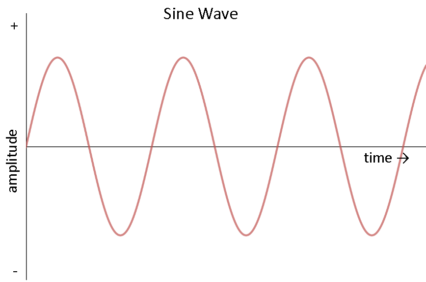
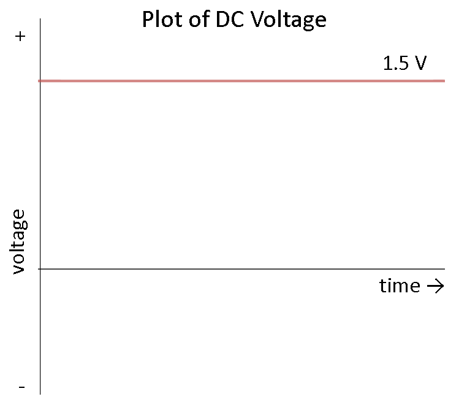

Introduction
Electricity powers our modern households, driving appliances and devices. The choice between Alternating Current (AC) and Direct Current (DC) for home electrical systems has significant implications for safety, efficiency, and practicality. This blog explores why AC dominates despite its higher hazard potential compared to DC.
What is AC and DC?
AC (Alternating Current)
AC is an electrical current that reverses direction periodically. It is characterized by a continuous and periodic change in direction, typically sinusoidal in waveform. AC is commonly used in household electricity supply and most electrical appliances.
DC (Direct Current)
DC is an electrical current that flows in one direction only. It maintains a constant polarity and magnitude over time. DC is often generated by batteries and used in electronic devices such as laptops, mobile phones, and electric vehicles.
Historical Context
The War of Currents
In the late 19th century, Nikola Tesla and Thomas Edison battled over the dominance of AC and DC systems. Edison supported DC for its perceived safety, while Tesla advocated for AC due to its efficiency in long-distance transmission. Despite Edison's aggressive tactics, Tesla's AC technology eventually triumphed.
Comparative Analysis of AC and DC Hazards
An experiment conducted by Mehdi Sadnagar (ElectroBOOM) demonstrated the effects of AC and DC on human skin:
| Voltage (V) | Sensation on Human Skin |
|---|---|
| 120 (AC) | Painful, potentially lethal |
| 170 (DC) | Mild tingling sensation |
| 340 (DC) | Noticeable discomfort |
Result: AC is more dangerous than DC in household settings.
Advantages and Disadvantages of DC
Disadvantages
- Limited Transmission Distance: DC faces significant power losses over long distances.
- Lack of Voltage Transformation: DC systems struggle with voltage adjustments.
- Difficulty in Power Generation and Distribution: DC requires complex infrastructure.
Advantages
- Enhanced Safety: DC is generally safer than AC.
- Rectification for Appliance Compatibility: Eliminates the need for AC-to-DC conversion in appliances.
- Longevity of Appliances: DC reduces the risk of device failure.
Advantages of AC
- Ease of Transmission and Distribution: AC can be transmitted over long distances with minimal loss.
- Standardization and Compatibility: AC voltage levels are standardized for household appliances.
- Technological Advancements: Innovations like transformers made AC more practical.
Conclusion
AC's dominance in household electrical systems is a result of historical, technological, and economic factors. While AC poses greater risks, its efficiency and compatibility with appliances justify its prevalence. Future research should focus on enhancing safety measures and exploring the effects of different waves on electrical devices.